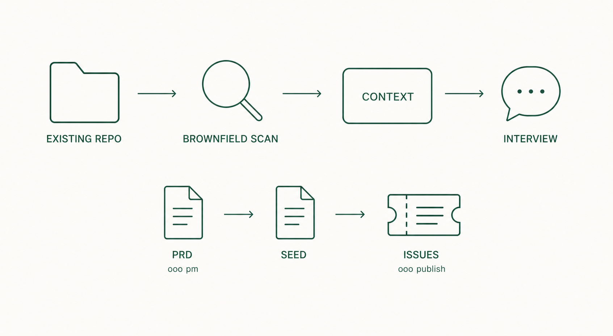

10. Existing projects
Up to chapter 9 the example was a fresh project. This chapter applies the same procedure to repositories that already have code, and to team work.

10.1 What differs
An existing repository already has chosen technology and constraints. Register it, and the Interview stops guessing like it would for a new project and asks questions grounded in the current code and constraints.
10.2 brownfield — register existing repositories
Run this inside the Claude Code session.
ooo brownfieldExpected result: a numbered list of git repositories and worktrees appears, and you pick the ones to use as default Interview context. Select only the repositories you actually work on.
Subcommands, per the official docs:
| Command | Role |
|---|---|
ooo brownfield scan | Scan for repositories only |
ooo brownfield defaults | Show current default repositories |
ooo brownfield set 6,18 | Set defaults by number |
10.3 pm — organize product requirements
Use this when organizing requirements at the product level rather than for one feature. Run it inside the Claude Code session.
ooo pmExpected result: product-level questions proceed and a PRD (product requirements document) is produced.
A PRD and a Seed are different. A PRD states what the product should be; a Seed is the work spec one run follows. A PRD is not executed as-is; feed its content to ooo interview to produce an execution-level Seed.
10.4 publish — hand work to a team
Turns a Seed into GitHub Issues a team can divide. Requires the gh CLI installed and logged in. Run inside the Claude Code session.
ooo publish <seed_path>Expected result: the issue structure to be created is shown first; after confirmation the issues are created in the target repository.
10.5 Definition of done
- The brownfield defaults point at the repositories you actually work on.
- Interview questions reflect the constraints of the existing code.
- If team work was needed, Seed-based issues exist in the target repository.